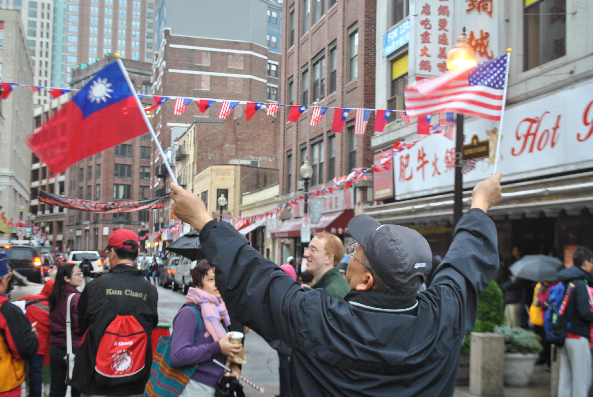

8 / 9 possibilities
ROC Oversea!
Your definition of Taiwanese includes everyone who thinks of themselves as citizens of Taiwan's official nationality -- the Republic of China. Most of them probably lived in the great China region and came from mainland China, specifically areas that were ruled by the then Republic of China (ROC), the party that lost the Chinese civil war, but they are not necessarily born in Taiwan or have lived in Taiwan before.
A lot of them flee to other countries from the great China area after ROC lost the civil war. In New York City, especially in Chinatown and Flushing, you can see a lot of them waving the ROC flag. Some of them do not even speak Taiwanese or Mandarin but they still support the ROC.
#/media/File:Flag_of_the_Republic_of_China.svg){kind=link}
It is important to remember that not every Taiwanese identifies with the ROC flag because for some of them it represents ROC and not Taiwan as ROC has killed and oppressed people who lived on the island for many years during Martial Law from 1949 to 1987.